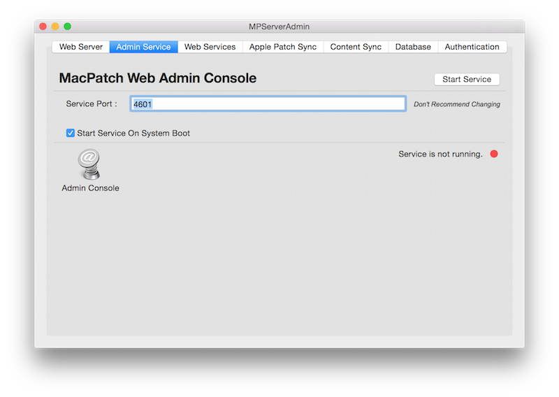

Web Admin Service
The Admin Service is the web admin console application. The default port for the application is 4601. All requests are brokered via mod_proxy using the
Web Server
.

Table of contents